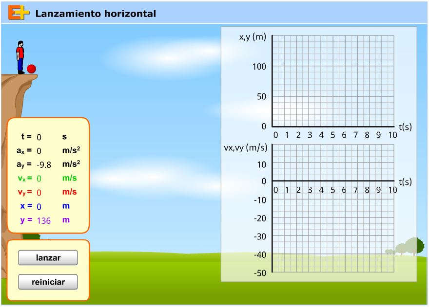
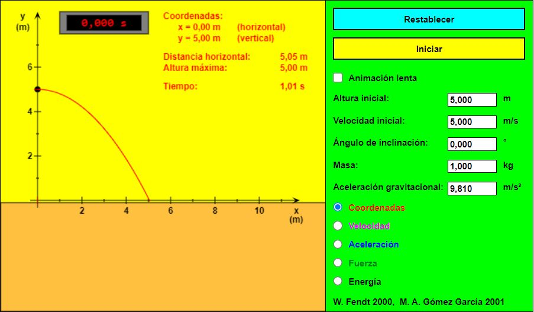

Conceptos generales
Cinemática
Dinámica
Electrostática
Electrodinámica
Termodinámica
Tiro horizontalEl tiro horizontal es el movimiento de un cuerpo que se lanza desde una cierta altura en la dirección horizontal y que debido a la acción de la gravedad el cuerpo tiende a caer a la superficie de la tierra.


Por lo anterior, en el tiro horizontal el movimiento se presenta en dos dimensiones, lo cual crea dos componentes de velocidad, la componente de velocidad sobre el eje x que corresponde al movimiento rectilíneo uniforme y la componente de velocidad sobre el eje y que corresponde a la caída libre.
Así mismo, la posición del objeto estará determinada por una componente horizontal sobre el eje de las x, más una componente vertical sobre el eje de las y.
Recordemos que la velocidad es una magnitud vectorial, por lo tanto la velocidad total la obtendremos en base a las componentes de velocidad en x y en y.
Las fórmulas usadas en el tiro horizontal serán (además de las fórmulas siguientes deberemos usar las fórmulas vistas en el movimiento rectilíneo uniforme y en la caída libre):
Al iniciar el movimiento
Velocidad horizontal
\(\displaystyle \vec{v}_{ix}=\vec{v}_{i} \)
Velocidad vertical
\(\displaystyle \vec{v}_{iy}=0 \)
Posición inicial en "x"
\(\displaystyle {x}_{i}=0 \)
Posición inicial en "y"
\(\displaystyle {y}_{i}=altura\,inicial \)
Para un instante "t" cualquiera
Posición en la dirección horizontal (desplazamiento)
\(\displaystyle x={x}_{i}+\vec{v}_{ix}\cdot t \)
Posición en la dirección vertical (altura)
\(\displaystyle y={y}_{i}+\frac{g\cdot {t}^{2}}{2} \)
Relación de las posiciones
\(\displaystyle y=\frac{g\cdot {x}^{2}}{2\cdot {\left(\vec{v}_{i}\right)}^{2}} \)
Velocidad horizontal
\(\displaystyle \vec{v}_{x}=\vec{v}_{ix} \)
Velocidad vertical
\(\displaystyle {v}_{y}=g\cdot t \)
Velocidad resultante
\(\displaystyle \vec v=\sqrt{{\left(\vec{v}_{x}\right)}^{2}+{\left(\vec{v}_{y}\right)}^{2}} \)
Ejercicio 1. Desde una torre medieval de paredes verticales se lanza horizontalmente una flecha con una velocidad vi = 40 m/s. La flecha llega al suelo a una distancia horizontal (desde el pie de la torre) igual a x = 100 m. ¿Cuál es la altura de la torre?
Solución: La altura de la torre es igual a la posición vertical de la flecha (con respecto a la posición inicial de lanzamiento) en el momento en que la flecha llega al suelo.
Datos
Vi = 40 m/s
x = 100 m
g = –9.8 m/s2
y = ?
Fórmula
\(\displaystyle y=\frac{\left(g\right)\left(x\right)^{2}}{2\left(\vec{v}_{i}\right)^{2}} \)
Sustitución
\(\displaystyle y=\frac{\left(-9.8\;m/s^2\right)\left(100\;m\right)^{2}}{2\left(40\;m/s\right)^{2}} \)
\(\displaystyle y=\frac{\left(-9.8\;m/s^2\right)\left(10,000\;m^{2}\right)}{2\left(1,600\;m^{2}/s^{2}\right)} \)
\(\displaystyle y=\frac{-98,000\;m^3/s^2}{3,200\;m^{2}/s^{2}} \)
Resultados
\(\displaystyle y = 30.6\, m \)
Ejercicio 2. Se lanza una pelota de beisbol horizontalmente a una velocidad de 25 m/s desde una altura de 60 m.
Calcula:
a) El tiempo que tarda en llegar al suelo,
b) La magnitud de la velocidad vertical que lleva a los 2 segundos,
c) La distancia horizontal a la que cae la pelota, a partir del punto desde donde fue arrojada.
Datos
Vi = 25 m/s
g = –9.8 m/s2
h = 60 m
tcaer = ?
Inciso (a). Se pide calcular el tiempo que tarda en caer
Fórmula
\(\displaystyle t=\sqrt{\frac{2\left(h\right)}{g}} \)
Sustitución
\(\displaystyle t=\sqrt{\frac{2\left(-60\;m\right)}{-9.8\;m/s^2}} \)
\(\displaystyle t=\sqrt{\frac{-120\;m}{-9.8\;m/s^2}} \)
\(\displaystyle t=\sqrt{12.24\;s^{2}} \)
Resultados
\(\displaystyle t = 3.5\, s\)
Inciso (b). Se pide calcular la velocidad vertical a los 2 segundos
Fórmula
\(\displaystyle \vec{v}_{y}=\left(g\right)\left(t\right) \)
Sustitución
\(\displaystyle \vec{v}_{y}= \left(-9.8\;m/s^2\right) \left(2\;s\right) \)
Resultados
\(\displaystyle \vec{v}_{y}=-19.6\;m/s \)
Inciso (c). Se pide calcular la distancia horizontal
Fórmula
\(\displaystyle x=\left(\vec{v}_{x}\right)\left(t\right) \)
Sustitución
\(\displaystyle x=\left(25\;m/s\right)\left(3.5\;s\right) \)
Resultados
\(\displaystyle x = 87.5\, m \)
Haz click en el siguiente enlace para ver tutoriales relacionados con el tema.